01
Content & Publishing Operations
Digital publishing, editorial QA, SEO, WordPress, newsletters, social media and high-volume content workflows.
I work across digital publishing, content operations, multimedia production and on-camera communication in English and Malayalam. I also explore how AI, automation and technology can simplify workflows, solve practical problems and turn ideas into useful systems.
Digital publishing, editorial QA, SEO, WordPress, newsletters, social media and high-volume content workflows.
English and Malayalam presenting, interviews, explainers, scripting, voice-over and multimedia storytelling.
Concept development, storyboarding, directing, shoot coordination, client communication and video production.
AI-assisted workflows, automation, tool testing, structured troubleshooting and practical product experiments.
University First Rank with 87%, combining academic excellence with practical training in journalism, audiovisual production and media.
Postgraduate study across politics, international relations, public policy and governance, with independent research.
Managed 1,700+ pieces end-to-end from news sourcing and verification to editing, SEO and digital publishing across energy, healthcare, pharma and finance.
Produced high-volume multimedia content from concept and scripting to on-camera presentation, shoot coordination and final production across multiple client sectors.
Deliver independent English and Malayalam multimedia projects, handling projects from concept and scripting through presentation, shooting, editing and final delivery.
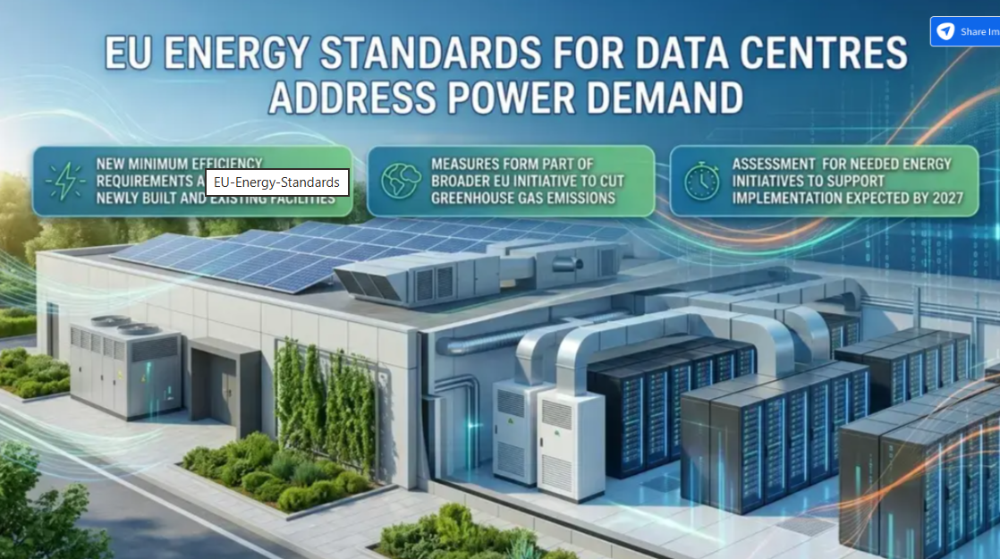
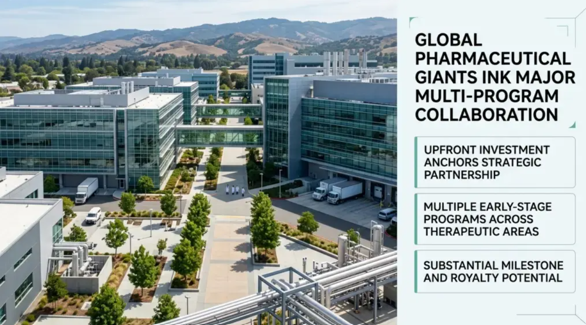
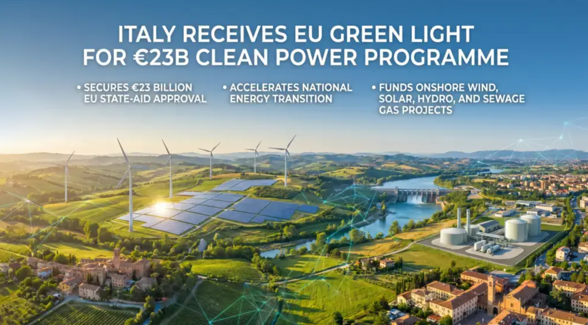
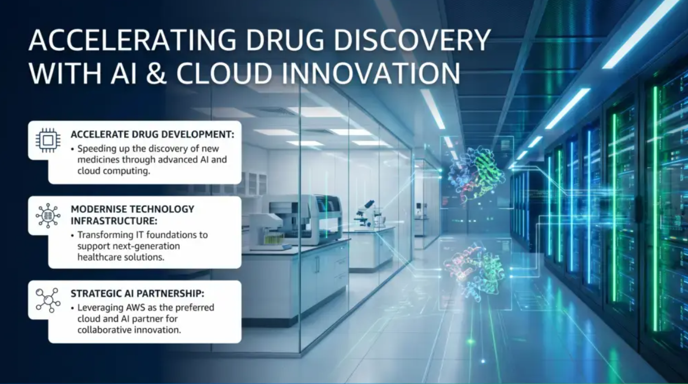
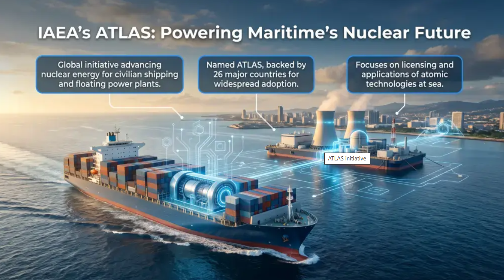
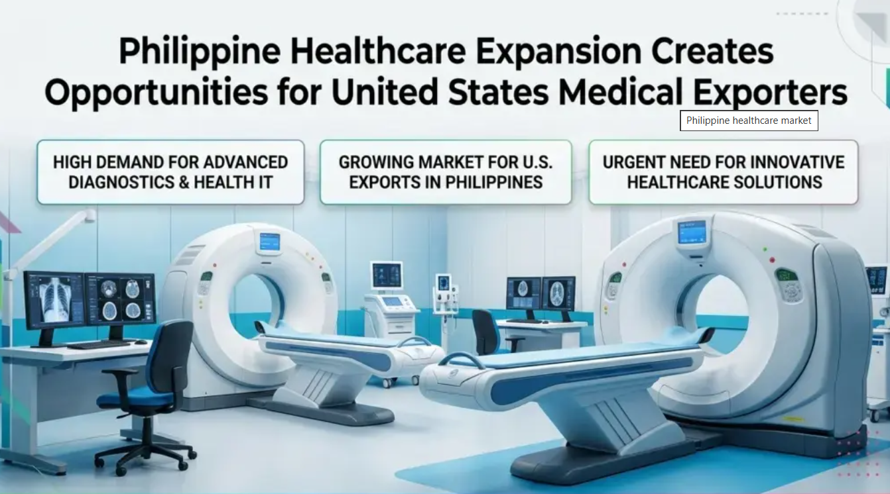
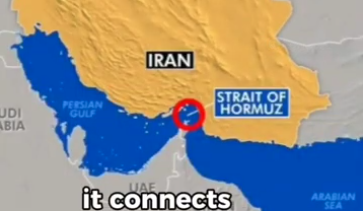
▶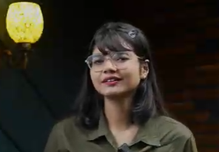
▶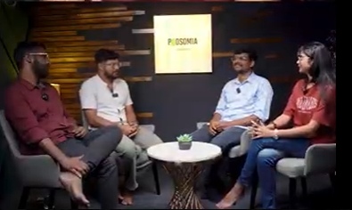
▶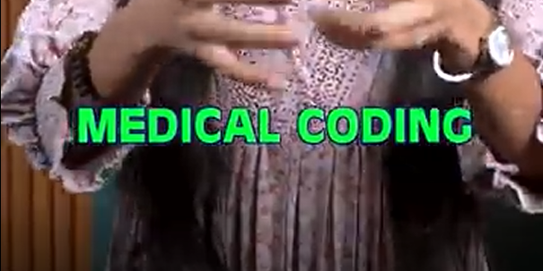
▶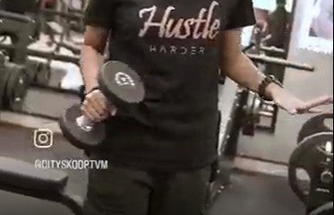
▶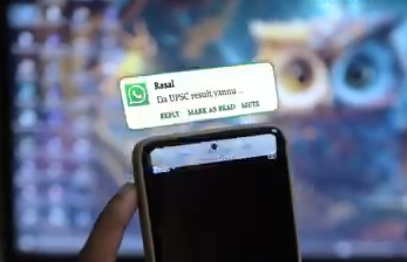
▶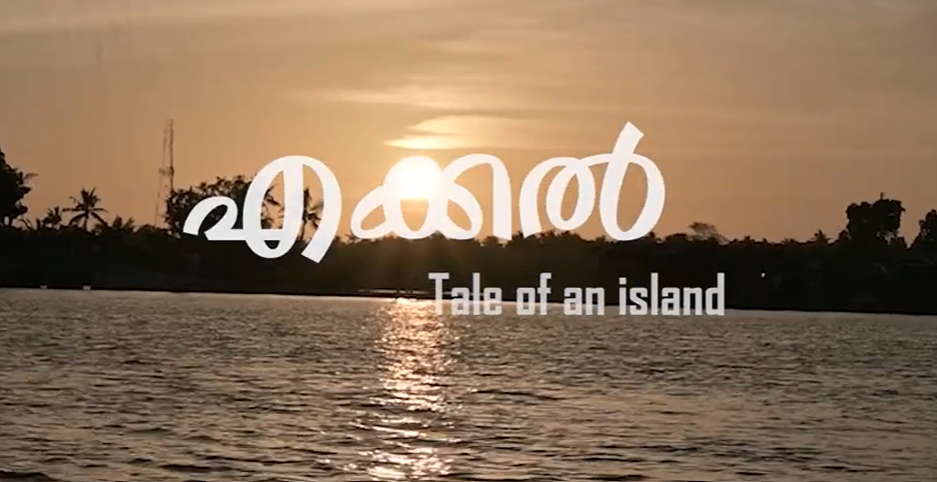
▶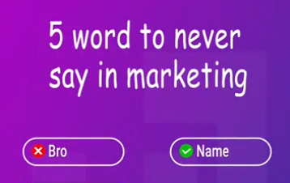
▶A complete corporate communications suite developed for Aether Dynamics, a hypothetical B2B clean-technology logistics company. Designed to demonstrate strategic narrative formulation, press release syndication standards, media outreach, executive positioning, and crisis incident management.
Aether Dynamics is an enterprise logistics intelligence firm dedicated to decarbonizing commercial transportation networks. Its predictive orchestration software integrates with existing telematics to eliminate fuel waste, navigate elevation bottlenecks, and deliver real-time, audit-grade carbon accounting.
Elena Vance, Chief Executive Officer: Former VP of Global Logistics Optimization at Apex Supply Chain Solutions. 15 years directing enterprise fleet corridors across North America and EMEA. Advisory board member for the Midwest Sustainable Freight Initiative. Holds an MBA from Northwestern University Kellogg School of Management.
Aether Dynamics is a logistics software provider focused on decarbonizing commercial transportation networks. Its predictive orchestration engine integrates with existing enterprise electronic logging devices to reduce fuel consumption, relieve highway choke-points, and produce verified carbon accounting. Headquartered in Chicago, Illinois, Aether serves regional carriers and freight forwarders across North America.
CHICAGO, October 31, 2026
Aether Dynamics, a commercial logistics software provider specializing in emissions reduction orchestration, today announced the completion of a $28 million Series A funding round led by GreenHorizon Ventures, with participation from FreightForward Capital and Midwest Urban Mobility Labs.
The investment will finance the expansion of Aether's core predictive route engine, fund enterprise integrations with tier-one Electronic Logging Device systems, and accelerate customer onboarding across its carrier network.
Commercial carriers face mounting pressure to comply with stringent Scope 1 and Scope 3 reporting mandates alongside sustained diesel price volatility. While large-scale electrification remains constrained by high capital costs and highway charging bottlenecks, Aether's platform leverages existing on-board telemetry to route commercial freight dynamic to highway topography, weather shifts, and live choke-points, reducing fleet fuel burn immediately.
"Fleet operators cannot afford to wait a decade for commercial high-voltage charging corridors before meeting emissions targets," said Elena Vance, Chief Executive Officer of Aether Dynamics. "Our technology addresses the diesel fleet operating on the road today. By pairing real-time physics and route data with route optimization, we make measurable fuel reduction both economically compelling and immediately deployable."
Across pilot deployments representing 12,000 commercial vehicles over the past 12 months, carriers utilizing Aether recorded an average fuel reduction of 14.2 percent, preventing more than 42,000 metric tons of carbon emissions.
"Aether Dynamics stands out in the climate-tech sector because its software delivers direct gross margin expansion from day one," said Sarah Chen, General Partner at GreenHorizon Ventures. "By transforming emissions reduction from a compliance chore into an operational cost saver, Elena and her team are redefining sustainable logistics."
Aether platform integrations are currently open for commercial fleet pilots across the United States and Canada.
Hi David,
Given your recent reporting on how infrastructure grid delays are slowing down Class 8 electric truck adoption, I thought this real-world fleet performance data would interest your readers.
Most regional freight carriers face an acute dilemma: environmental regulations demand verifiable Scope 1 reporting right now, but megawatt charging depots along major transit corridors remain years away from practical scale.
Chicago-based logistics tech provider Aether Dynamics has just completed a 12-month study across 12,000 commercial vehicles demonstrating that legacy diesel power units can achieve immediate decarbonization through predictive software:
Our CEO, Elena Vance (formerly VP of Global Logistics Optimization at Apex), can provide an unvarnished assessment of where corporate fleet electrification projections diverge from day-to-day terminal operations, and what practical transition technology looks like today.
Would you be open to a 10-minute briefing with Elena next Tuesday or Wednesday? I can also share the full carrier pilot dataset under advance embargo.
Best regards,
Alex Taylor
Head of Communications · Aether Dynamics
alex.taylor@aetherdynamics-fictional.com · (312) 555-0194
Corporate America's net-zero transition targets often rely on a single untested assumption: that heavy freight will effortlessly electrify on schedule. In reality, Class 8 long-haul shipping faces severe battery supply chain bottlenecks, raw material shortages, and electrical utilities that cannot deliver high-voltage highway charging hubs for at least a decade.
This op-ed argues that by fixating entirely on a distant zero-emission horizon, boardrooms are ignoring the single most effective decarbonization lever available today: operational efficiency inside existing combustion fleets.
Examining the real power demands of interstate depot charging, showing why full fleet turnover is realistically a multi-decade process rather than an overnight milestone.
How legacy batch-routing software forces modern diesel engines to burn excessive fuel on preventable highway climbs and predictable corridor congestion.
Why real-time telemetry dynamic rerouting can eliminate tens of millions of tons of emissions immediately, preserving capital needed for future charging infrastructure.
Reframing corporate emissions reduction from a costly compliance checklist into immediate operational margin expansion for carriers and shippers alike.
"At 2:15 PM Central Time today, Aether Dynamics detected an isolated cloud configuration vulnerability following a scheduled software update. Our technical security teams secured the environment within 42 minutes. An initial internal review established that non-sensitive route scheduling metadata belonging to three enterprise carrier clients was briefly accessible. No personal identifying information, driver credentials, or financial accounts were involved or compromised. We have notified the technical points of contact at the three affected organizations. A third-party cybersecurity forensic audit has been initiated to verify our remediation. Aether Dynamics is committed to data transparency, and we will issue an updated technical advisory within 24 hours."
No. Aether's cloud architecture strictly isolates logistics dispatch telematics from identity directories and financial systems. The exposed repository contained operational dispatch metadata, specifically lane departure times and total freight weight brackets. No driver names, license records, user passwords, or banking information were stored in this partition.
The configuration exposure existed for 42 minutes following a server deployment executed at 1:33 PM Central Time. Automated permission monitoring alerts triggered at 2:15 PM Central Time, and engineers completely restored private access parameters by 2:17 PM Central Time.
We adhere to all regional and federal data disclosure standards. Because this event did not involve personal identifying consumer data, formal regulatory filings are not mandatory. However, we have retained an independent forensic firm to review system logs and confirm the exact boundaries of the incident.
We updated our continuous deployment controls to enforce automated guardrails that prevent any cloud storage resource from modifying default private visibility. Furthermore, any configuration change impacting network access permissions now requires dual senior engineering sign-offs before implementation.
No client action is necessary. Customer administrative access keys and account passwords remain uncompromised. Clients with specific questions regarding their operational logs may reach their designated account representative or email security-support@aetherdynamics-fictional.com.
My technical work is practical and exploratory. I use AI to prototype ideas, test workflows and solve problems while continuing to build my own understanding of the underlying tools and code.
A self-initiated tool designed to reduce repetitive CV formatting and make tailored versions easier to create. I defined features, tested implementations, debugged issues and iterated with AI assistance.
A self-built task management web app created as a practical coding project, with a focus on building functionality, refining the interface and learning through hands-on development.
An independent AI news website I built and manage, covering consequential developments across the global AI industry while experimenting with digital publishing, SEO, AEO/GEO and technical site optimisation.
Professional experimentation with reusable prompts, model comparison, verification stages, human review, tool testing, AI-search visibility and workflow troubleshooting.
News Sourcing · Verification · Editing · WordPress · SEO · HTML · Newsletters · Social Media · AEO/GEO
On-Camera Presentation · Video Production · Scripting · Storyboarding · Directing · Interviews · Voice-over · Video Editing
AI-Assisted Workflows · Automation · Prompting · Model Comparison · AI Research & Experimentation · Human-in-the-loop QA
Editorial QA · Shoot Coordination · Client Communication · Onboarding · Workflow Documentation · Cross-functional Coordination
HTML · Python · JavaScript · CSS · SQL Foundations · GitHub Pages · Streamlit
WordPress · Canva · CapCut · DaVinci Resolve · Adobe Premiere Pro · Feedly · Zapier · ChatGPT · Claude · Gemini · Grok · Perplexity
Selected certifications and credentials across SEO, AI search, project management and professional communication.
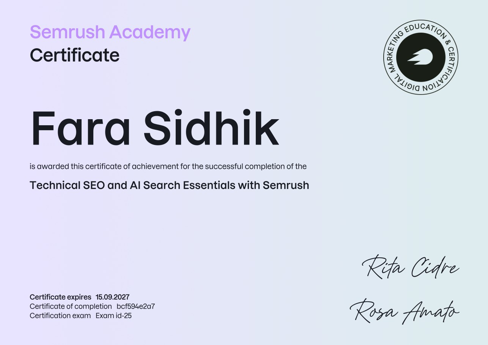
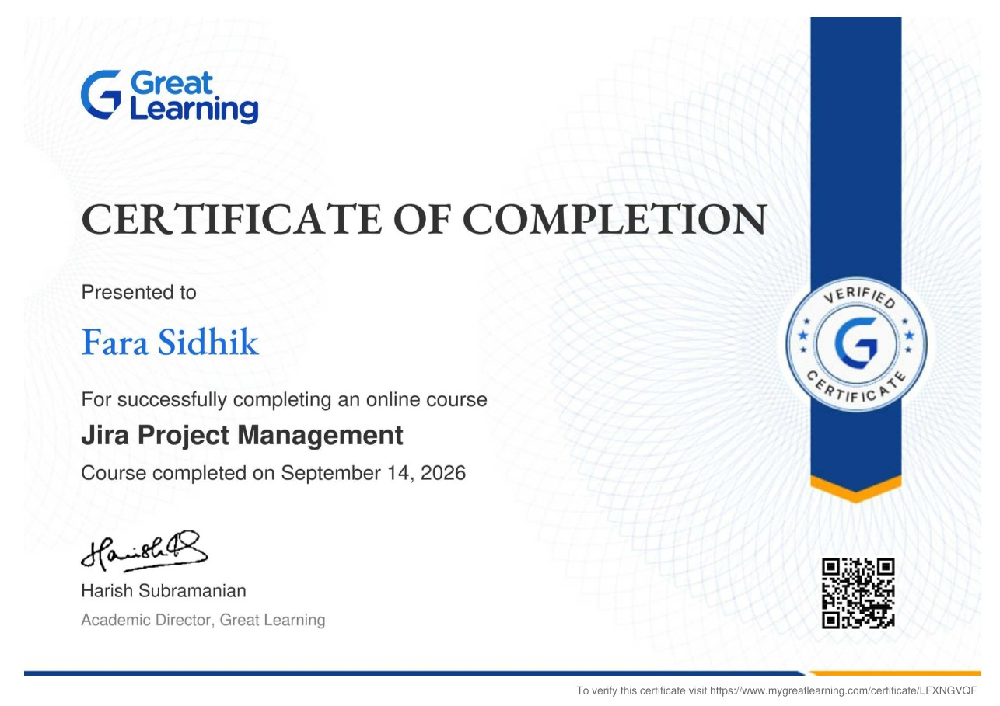
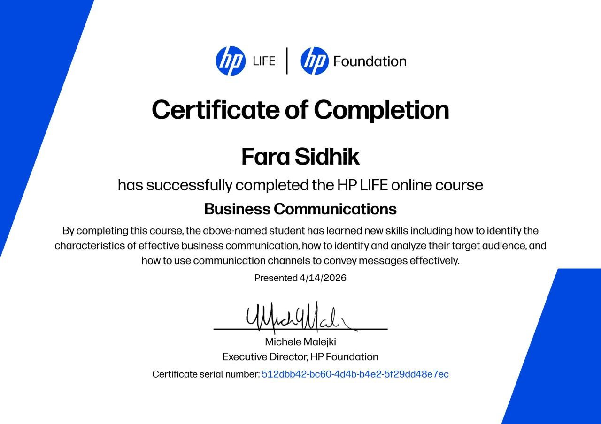
Work is only one part of me. I like experimenting with visual ideas, performing, learning new things and making things simply because I want to see if I can.
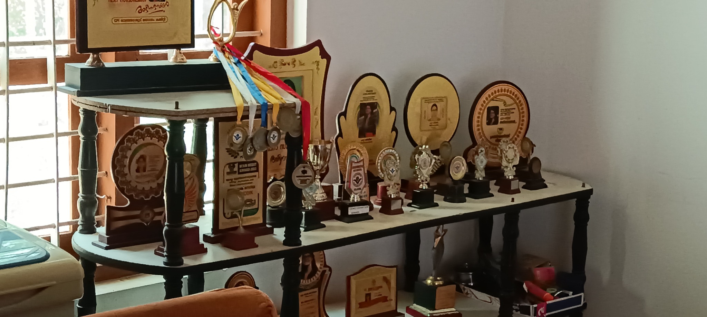
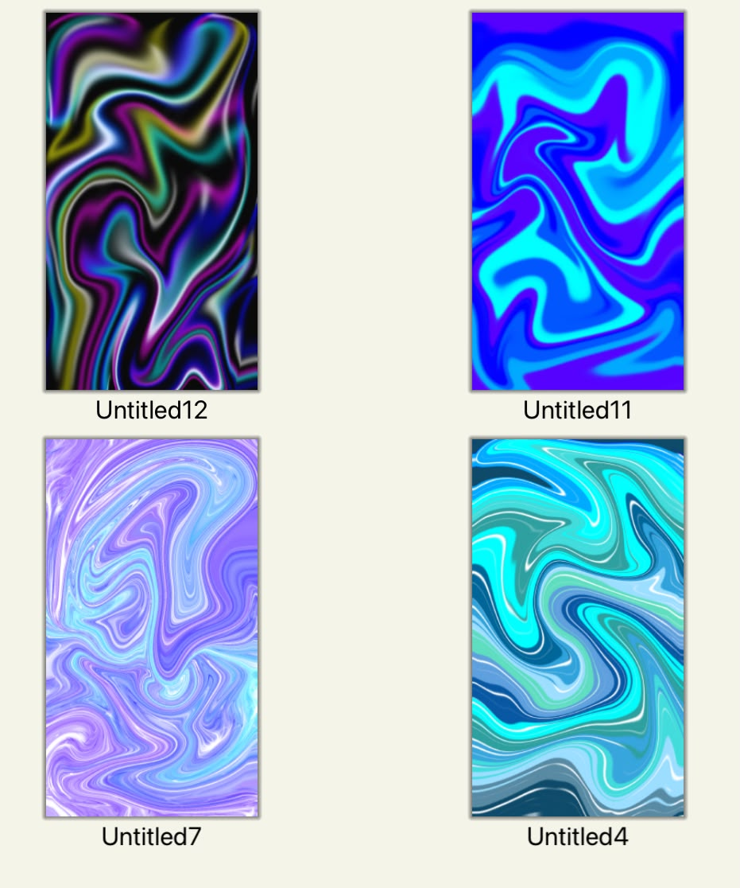
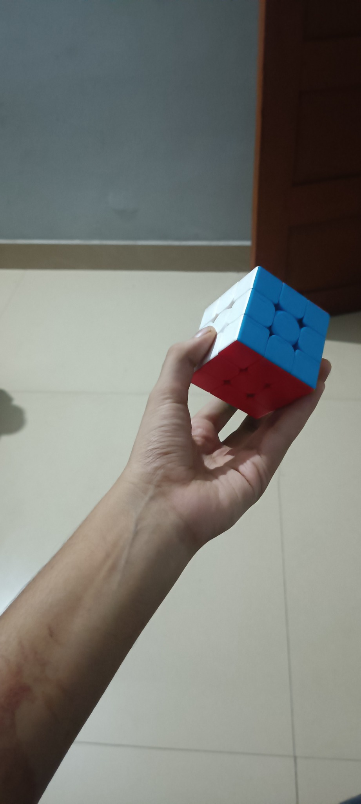
Open to opportunities across content operations, digital media, communications, publishing, production and AI-enabled workflows.